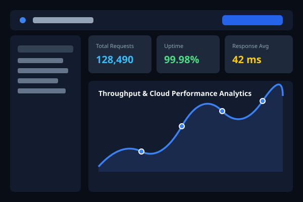

Full-Stack Core Architecture
Full-Stack Replit Portfolio Platform
A multi-page application with client-server JavaScript execution. Features a secure Node.js Express backend, persistent JSON storage at data/contactReceived.json, and an authenticated administrative analytics suite.
-
RESTful Persistence: Public
POST /api/contactwith input sanitation and validation. - Zero Public Credentials: Admin password secured using server-side environment secrets.
- Interactive Analytics: Real-time Chart.js breakdown and reply rate telemetry.